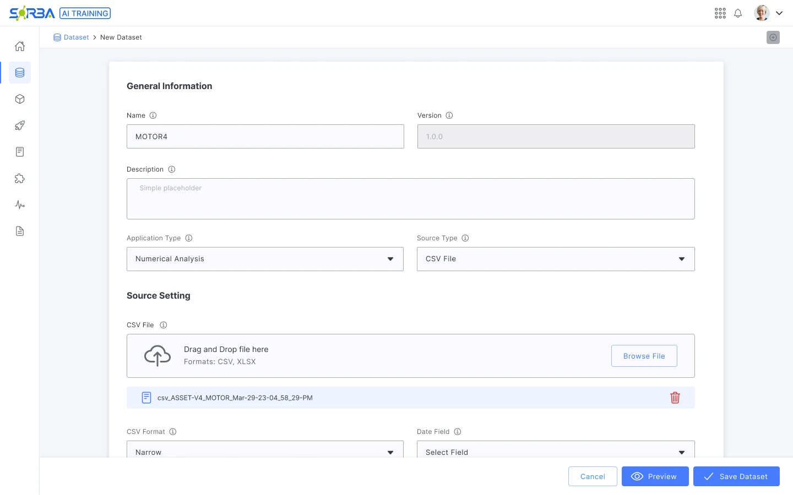
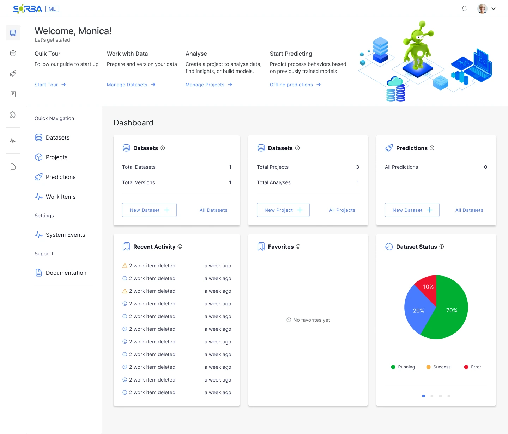
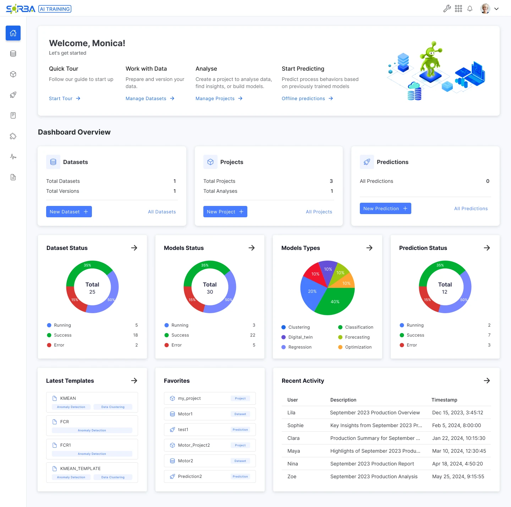
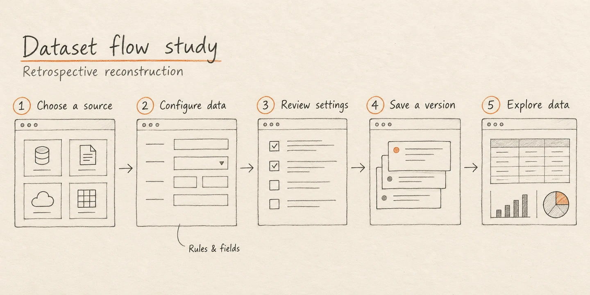
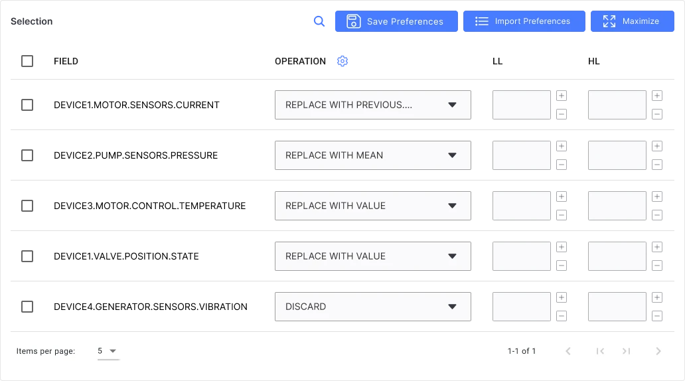
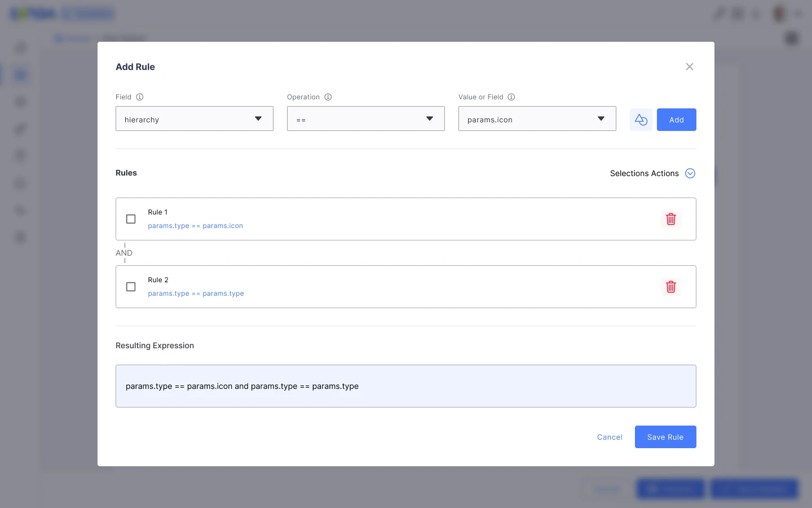
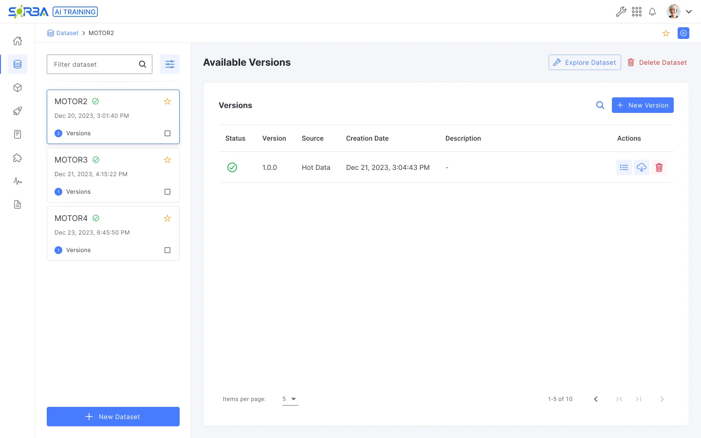
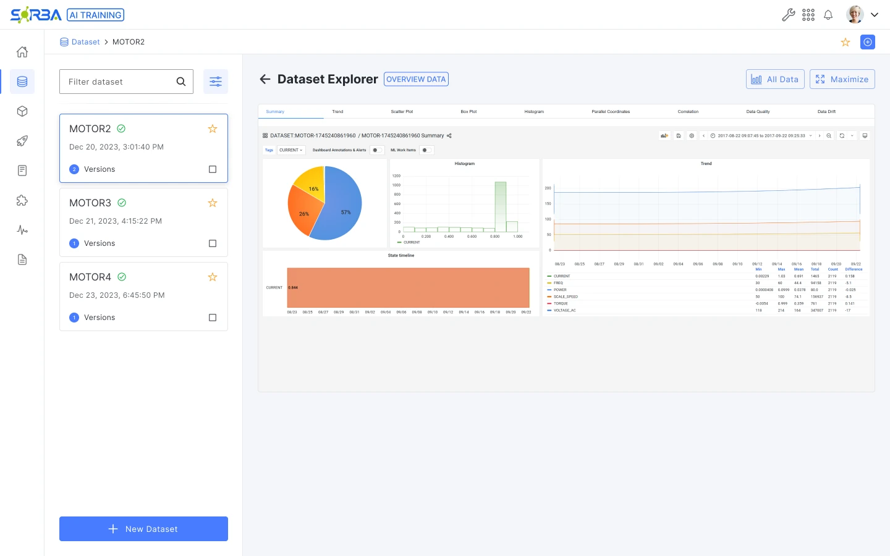
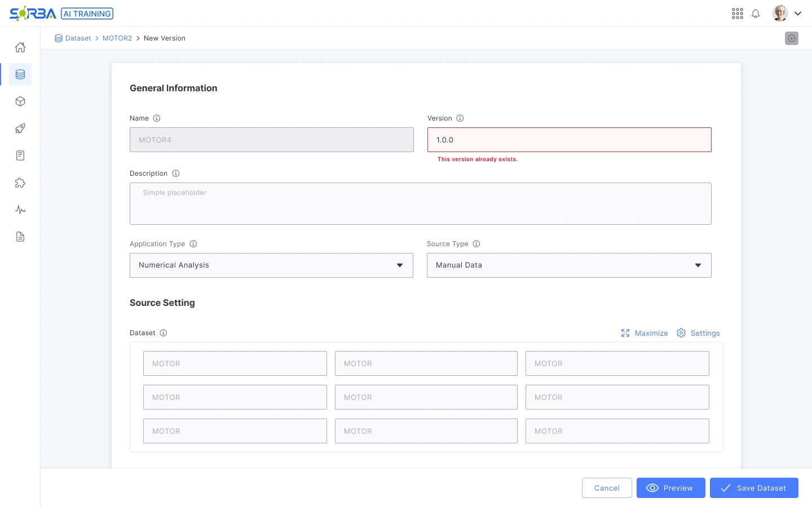
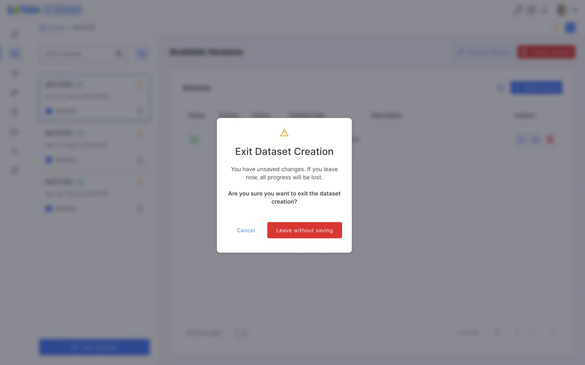

From overview
to versioned datasets.
AI Trainer · Sorba.ai · Product design
Before a model can be trained, its data has to be prepared. I worked on AI Trainer’s overview and dataset flow: choosing a source, configuring its fields and rules, and managing the versions used for analysis.


View full image- The design problem
- Make the route from the dashboard to a configured, versioned dataset understandable.
- My response
- Clearer entry points, grouped configuration, explicit rules and recovery states.
- What I can show
- Product screens and design decisions. End-user validation remains open.
Designing without direct access to users.
I did not have direct access to end users or other stakeholders. I worked with developers to discuss implementation and technical constraints, using the available product designs to reason through the task.
That collaboration helped me understand the system. It could not tell me whether people would understand the interface or complete the task successfully. I treated those as questions to test, rather than findings.
My contribution here covers the overview and dataset workflow. Model training and evaluation sit outside this case study.
Give each dashboard action a clear purpose.
The earlier overview repeated navigation and used dataset labels for other objects. I reorganized the dashboard around datasets, projects and predictions, with actions that match each one.


View full image

View full image- Use the width for the work
- The revised layout removes the second “Quick Navigation” column while retaining the main product rail.
- Match labels to objects
- The Projects card is named correctly; Predictions has “New Prediction” and “All Predictions” actions.
- Separate entry points from status
- Primary object cards sit above status summaries, templates, favorites and recent activity, separating entry points from monitoring.
A path through a dense configuration task.
Dataset setup combines source choices, parsing, field operations and rules. I organized the case around that task sequence so the relationship between the screens is visible.


View full image- Choose a source
- Configure data
- Review settings
- Save a version
- Explore data
The task map connects configuration and management views. The screenshots use different sample datasets to show each designed state.
Keep the source and its settings together.
The CSV setup at the top of this case shows the source type, upload area and a persistent action bar. The full form continues into parsing, aggregation and field-level processing. Grouping gives the form structure, but its length remains a trade-off.


View full image
Preview is available before saving in the design. A resulting preview screen is not included in the available artifacts, so I have not reconstructed one.
Make the resulting rule visible.
A rule is more than a dropdown choice. The builder keeps its field, operation and value together, lists the conditions, and shows the resulting expression before saving. That gives the configuration an inspectable representation.


View full imageKeep the dataset in context as versions change.
The dataset list stays beside the selected dataset’s versions. Version, source and creation date help distinguish entries, while “New Version” and “Explore Dataset” make the next actions explicit.


View full image

View full imageExplain conflicts. Make leaving deliberate.
The design includes an inline message for an existing version identifier and a confirmation before discarding unfinished work. These states address different risks: an invalid identifier and an unintended loss of configuration.


View full image

View full imageThe exit dialog still uses “Cancel” for staying in the form. I would test a more explicit label, such as “Keep editing,” alongside the warning and focus behavior.
What the work establishes.
What it still needs to prove.
The designs show a revised overview and a dataset workflow with source configuration, field operations, rules, versions, exploration and recovery states. They demonstrate how I structure a technical product and make its decisions visible.
They do not establish a reduction in errors, faster completion, higher adoption or successful usability with end users. Developer discussion was technical input, not a substitute for that evidence.
What I would test next
- Can someone choose and configure the correct source without help, including the date and time settings?
- Can they explain the effect of a field operation or combined rule before saving?
- Can they distinguish a dataset from a version, recover from a naming conflict, and leave without losing work unintentionally?
I would observe task completion, errors, requests for help and interpretation of the saved configuration. I would also review contrast, form length and disclosure of advanced settings before claiming the flow is easier to use.